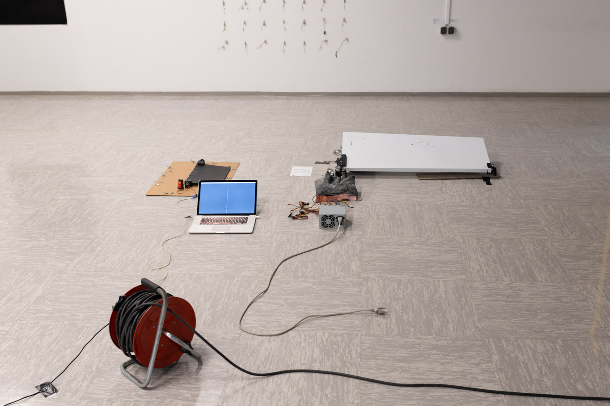
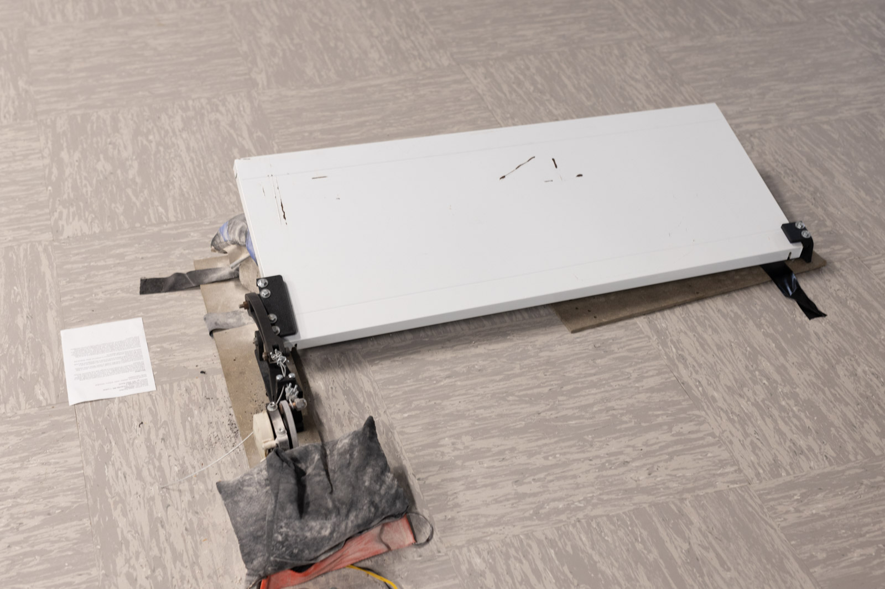

S4andWall
2024
The arrival of the Saharan sands reminded me once again of the global nature of our world. Fearing the danger of this, I created the work S4andWall, which is a flap that lifts up in case of danger. The machine protects us with a barrier against the sand. The work itself lives as a machine, its only function is to illustrate the protection of humans from a danger that only electronic devices can foresee.
It receives its perception of danger through various sensors, which in their communication detect a noise that creates a certain dance of this machine, and thus it comes to life.
The reason for using sensors and data that are not suitable for such a system is simply that it detects a kind of noise in the atmosphere that could endanger our lives.
Thus, the machine sacrifices its existence to protect us, which destroys the machine more than it would destroy us.
Most of the physical work is done by the machine, where it trims the metal, assembles the motors, microcontrollers, cables, bearings and screws. The rest of the part that is designed to hold the glass and move the hatch is created using a 3D printer. This way, most of the physical work is done by the machine, with the human only assisting where it is simpler and cheaper to do so. The work is thus created in the mode of human assistance to a machine device.